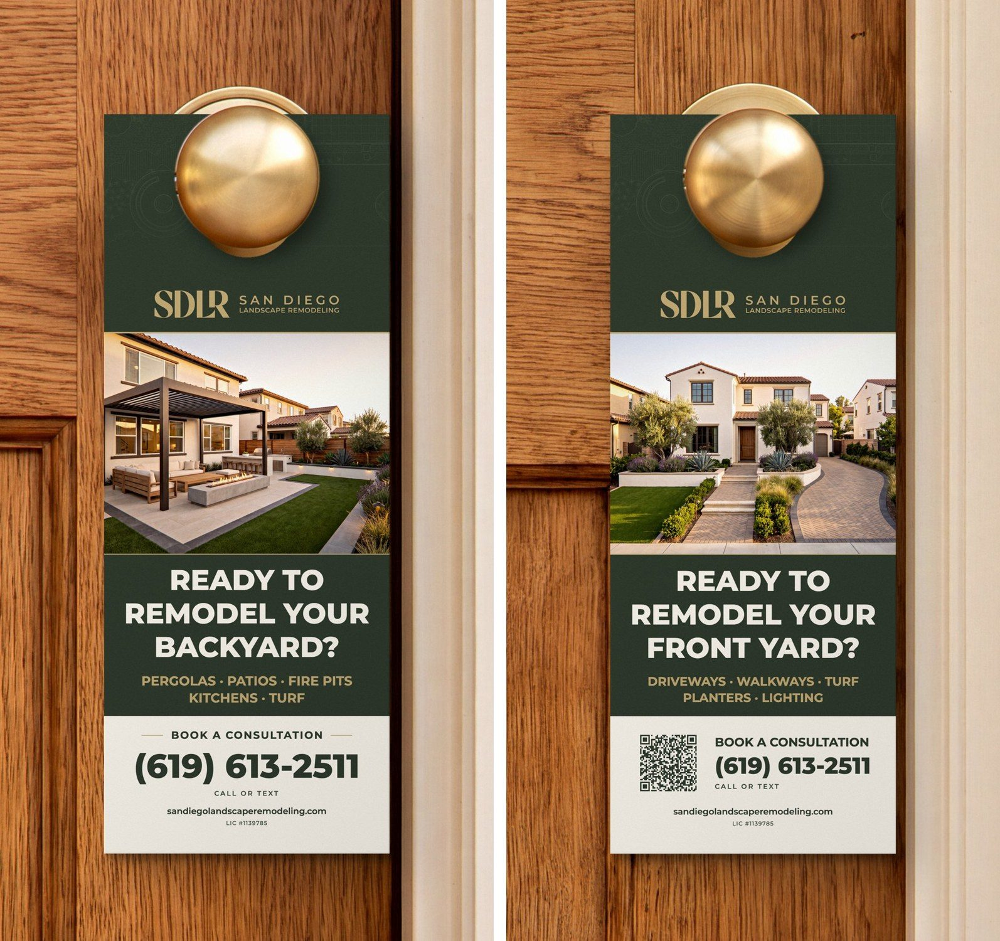
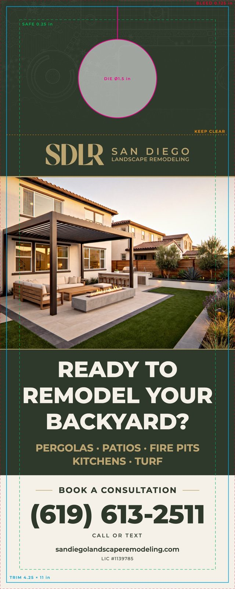
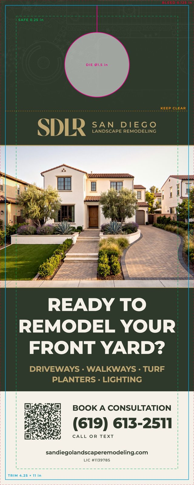

The door hanger chosen for the first print run of 1,000. The backyard faces out because it is the hero service, and its headline matches the yard sign and fence banner. The front yard is the second hook on the back, with the QR code. The white lettering is about 40% bigger so it fills the green.

| Size | 4.25 × 11 in, with 0.125 in bleed and the standard door-hanger die (hole + slit) |
| Stock | 16 pt Premium Matte cover, matte aqueous coating, full colour both sides |
| Quantity | 1,000 (first run, QR tagged run1) |
| Printer | GotPrint: cheapest for this spec of the printers compared (NextDayFlyers was about $100 more; UPrinting and Vistaprint do not offer 4.25 × 11) |
| Files | Native layered Illustrator file (live type, global swatches) and an outlined CMYK printer PDF, in Drive under SDLR assets/print-ready/door-hangers/2026-11-21-v3/ |

